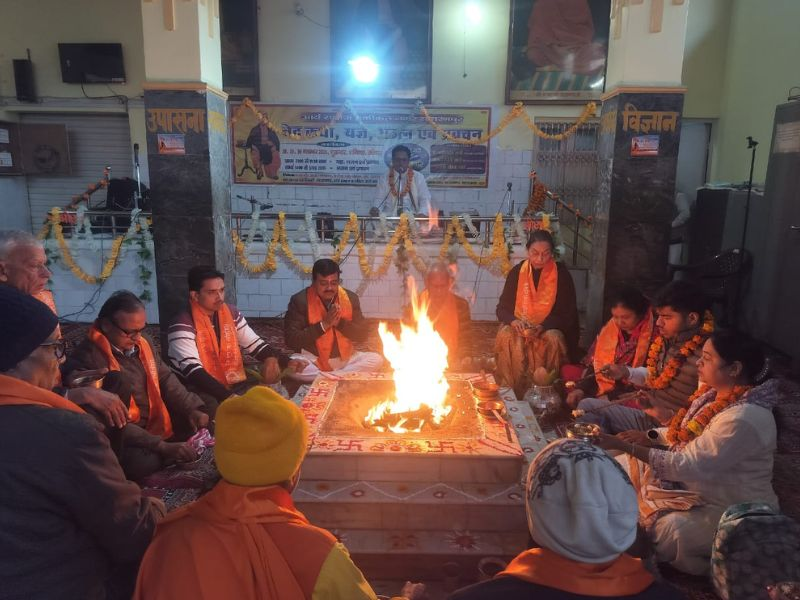

27 Years of Vedic Wisdom, Spiritual Guidance & Religious Services
With over 27 years of dedicated service, Acharya Shri Kapil Dev Sharma is a renowned Ved Pracharak and spiritual guide. He has been instrumental in preserving and propagating Sanatan Dharma through his profound knowledge of Vedic scriptures.
Specializing in Bhagavad Gita Pravachan, Sundarkand Path, and conducting various religious ceremonies, Acharya Ji has touched the lives of thousands of devotees with his wisdom and compassionate guidance.
Years of Experience
Religious Ceremonies
Followers & Devotees
Bhagavad Gita Sessions

"Acharya Ji's guidance transformed our family life. His Bhagavad Gita sessions are divine."
"The Sundarkand Path conducted by Acharya Ji brought immense peace to our home."
"Highly recommended for anyone seeking spiritual enlightenment and Vedic knowledge."
Acharya Shri Kapil Dev Sharma
+91 73530 65304
+91 73959 00133
dev4kapil@gmail.com
Haridwar, Uttarakhand